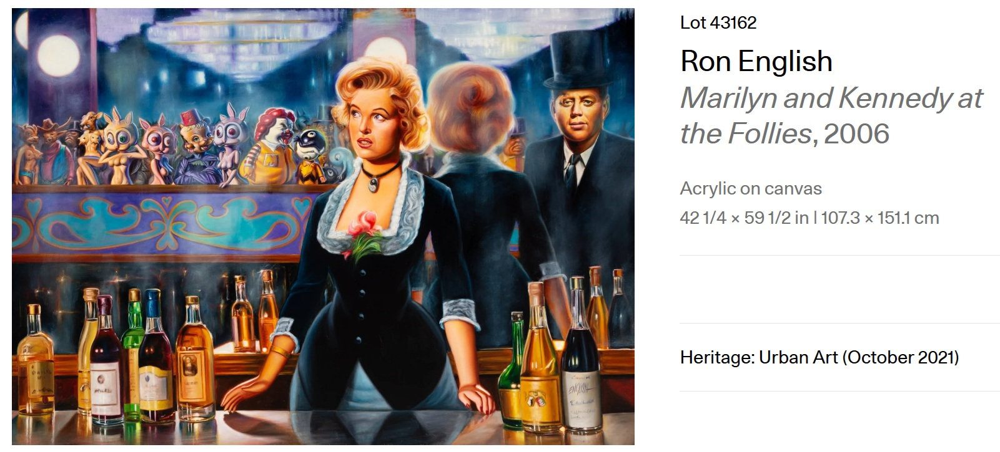
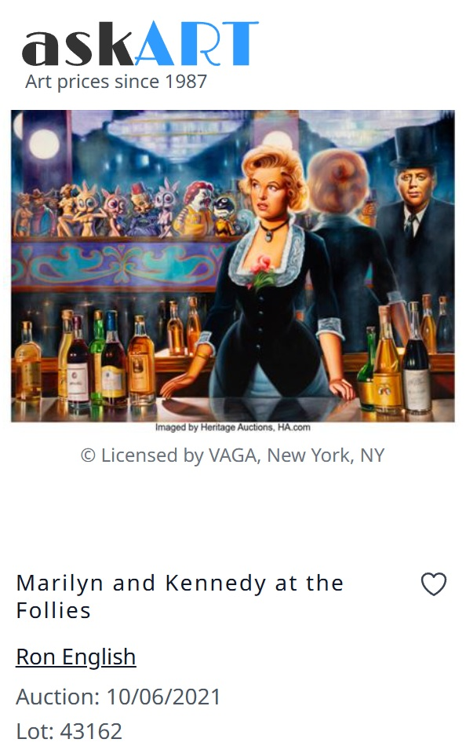
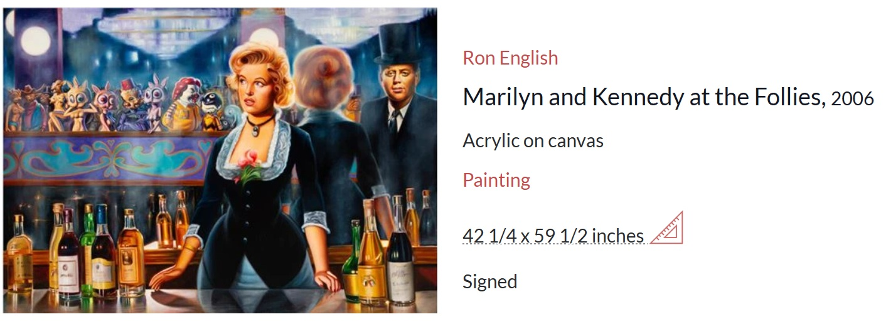
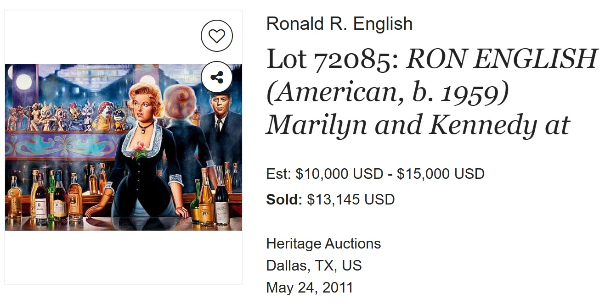
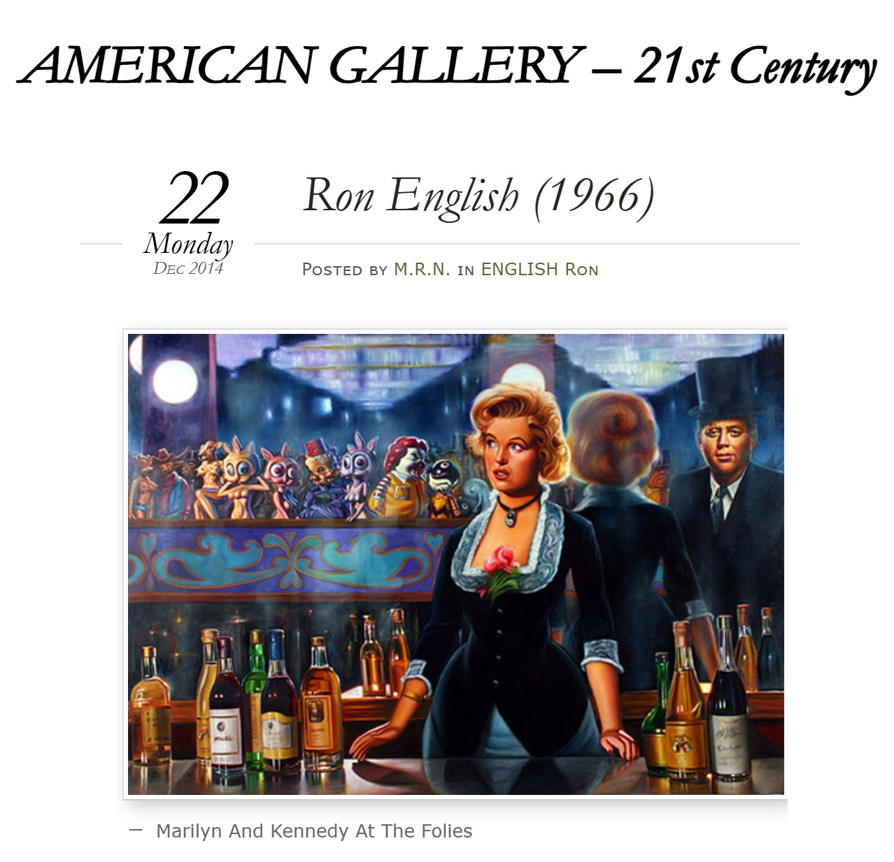

Literature
Ron English, Abject Expressionism: The Art of Ron English (San Francisco: Last Gasp, 2007), p. 135. ISBN 978-0867196894.

Ron English, Original Grin: The Art of Ron English (Paris: Cernunnos, 2019), p. 305. ISBN 978-2374950938.

Provenance
Private collection.
Notes
Artsy, MutualArt, and Invaluable describe this work as acrylic on canvas; this catalogue record retains oil on canvas.
Ancillary Documentation









Selected Online Circulation
Selected examples of the work’s online circulation, reproduction, or discussion. This list is not exhaustive; it is intended to document representative appearances of the image beyond formal exhibition and publication records.